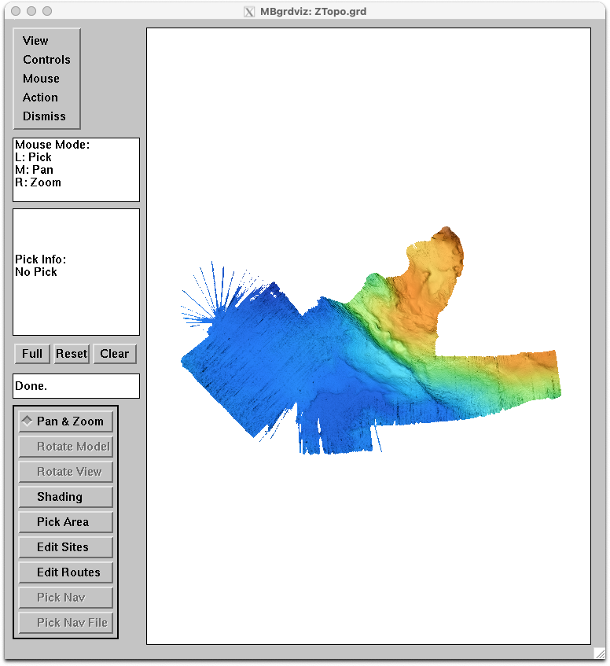

This directory contains a Dockerfile used to automatically build an MB-System Docker image based on Debian 12 Linux and publish this image to Docker Hub, where it can be publicly accessed. This file documents how the MB-System Docker image can be used and how it is structured.
Last Modified 16 May 2024
A software container provides an isolated environment in which one or more applications can be run regardless of the host operating system configuration. The Docker platform provides the capabilities needed to create containers and to run those containers on many different sorts of computers. A good overview of how this works can be found at: https://docs.docker.com/get-started/overview/.
Basically, if one installs the Docker engine software on a computer, be it Mac, Linux, Windows, or whatever, then one should be able to load and run an application included in a Docker container on this computer without needing to install the application directly. The container is created from a Docker image, which contains all of the operating system elements and software installations needed to run the desired application.
However, the interactive applications that are part of MB-System use the X11 window system plus OpenGL for windowing and graphics. Consequently, the host computer needs to be running an X11 server in order for the graphical programs to work. This includes mbedit, mbnavedit, mbvelocitytool, mbeditviz, mbgrdviz, and mbnavadjust. Also, since the client programs running within the container will appear (in terms of ip address) to be running on a different computer than the host, the X11 server must be set to allow connections from all client programs regardless of location.
The MB-System Docker image is built using Debian 12 Linux and the current MB-System release, and is updated each time a new MB-System release is made. The current release is accessed using the "latest" tag in the Github repository: https://github.com/dwcaress/MB-System/releases/latest. This image is then available from the Docker Hub site at: https://hub.docker.com/r/mbari/mbsystem
The MB-System Docker image is run from a terminal command line on the host computer. Once the Docker container (a running Docker image) is active it presents as the command line in the same terminal window, and is accessing the same local directory as before. The difference is that the user can now run the MB-System and GMT programs installed in the Docker image.
The first requirement is to install and run the Docker Desktop application on your local computer, insuring that a Docker server process is running locally. In order to download the MB-System Docker Image, enter the following in a terminal shell:
docker pull mbari/mbsystem:latestThe output to the shell should look something like:
user@LOCALCOMPUTER% docker pull mbari/mbsystem:latest
latest: Pulling from mbari/mbsystem
609c73876867: Pull complete
c62b5ee91c24: Pull complete
ad71b3e3baf8: Pull complete
45076d4b5a6d: Pull complete
Digest: sha256:8fa5a3621be6eed759a910295b972733b1f6276494ec54f41ea490523e6c4bb0
Status: Downloaded newer image for mbari/mbsystem:latest
docker.io/mbari/mbsystem:latest
What's Next?
View summary of image vulnerabilities and recommendations → docker scout quickview mbari/mbsystem:latest
user@LOCALCOMPUTER% Your Docker Desktop should now show mbari/mbsystem as one of the available local images.
You must also install and run an X11 window server on your computer. The best option is to install XQuartz from: https://www.xquartz.org
To start a Docker container using the MB-System Docker image, navigate a command line shell to a directory containing seafloor mapping data that you wish to process, and then enter a "docker run" command as described below. In order to run MB-System graphical tools such as mbedit, you must have an X Server running on the host with access control turned off using "xhost +", and have the environment variable DISPLAY in the container reference the X Server. If the local machine or host has an ip address of 192.168.25.26, then the X Server reference is "192.168.25.26:0". The following sequence of commands should work:
xhost +
export IP=192.168.25.26
docker run -it --platform linux/amd64 --rm --network=host \
--user mbuser \
--env=LIBGL_ALWAYS_INDIRECT=1 \
--env=DISPLAY=$IP:0 \
--volume=$HOME/.bash_history:/opt/.bash_history \
--volume=$PWD:$PWD \
--volume=$PWD/logs:$PWD/Docker/logs \
--workdir=$PWD \
mbari/mbsystemThe command line will return with a changed cursor, indicating that you are executing a shell within the now-running Docker container. Now MB-System command line tools like mbinfo can be run:
mbuser@docker-desktop:/Users/caress/TestData$ mbinfo -I 0010_20230405_034803_SallyRide_EM124.kmall
Swath Data File: 0010_20230405_034803_SallyRide_EM124.kmall
MBIO Data Format ID: 261
Format name: MBF_KEMKMALL
Informal Description: Kongsberg multibeam echosounder system kmall datagram format
Attributes: Kongsberg fourth generation multibeam sonars (EM2040, EM712,
EM304, EM124), bathymetry, amplitude, backscatter, variable beams,
binary datagrams, Kongsberg.
Data Totals:
Number of Records: 331
Bathymetry Data (1024 beams):
Number of Beams: 338944
Number of Good Beams: 331453 97.79%
Number of Zero Beams: 6008 1.77%
Number of Flagged Beams: 1483 0.44%
Amplitude Data (1024 beams):
Number of Beams: 338944
Number of Good Beams: 331453 97.79%
Number of Zero Beams: 6008 1.77%
Number of Flagged Beams: 1483 0.44%
Sidescan Data (2048 pixels):
Number of Pixels: 677888
Number of Good Pixels: 615164 90.75%
Number of Zero Pixels: 0 0.00%
Number of Flagged Pixels: 62724 9.25%
Navigation Totals:
Total Time: 0.9972 hours
Total Track Length: 12.7035 km
Average Speed: 12.7390 km/hr ( 6.8859 knots)
Start of Data:
Time: 04 05 2023 03:47:59.852861 JD95 (2023-04-05T03:47:59.852861)
Lon: -118.154674778 Lat: 32.565430607 Depth: 1912.3238 meters
Speed: 0.0000 km/hr ( 0.0000 knots) Heading: 134.7583 degrees
Sonar Depth: 4.1616 m Sonar Altitude: 1908.1622 m
End of Data:
Time: 04 05 2023 04:47:49.825473 JD95 (2023-04-05T04:47:49.825473)
Lon: -118.042174701 Lat: 32.532130508 Depth: 1880.0739 meters
Speed: 11.7805 km/hr ( 6.3678 knots) Heading: 15.4361 degrees
Sonar Depth: 4.1512 m Sonar Altitude: 1869.7341 m
Limits:
Minimum Longitude: -118.192882524 Maximum Longitude: -118.008498980
Minimum Latitude: 32.478656229 Maximum Latitude: 32.599855176
Minimum Sonar Depth: 3.2535 Maximum Sonar Depth: 5.2087
Minimum Altitude: 1840.1272 Maximum Altitude: 1947.1191
Minimum Depth: 1625.6368 Maximum Depth: 2066.8716
Minimum Amplitude: -109.4064 Maximum Amplitude: 20.6295
Minimum Sidescan: -101.6000 Maximum Sidescan: 19.9000
mbuser@docker-desktop:/Users/caress/TestData$ One can also run MB-System graphical tools such as mbedit, mbnavedit, mbvelocitytool, mbgrdviz, mbeditviz and mbnavadjust. The command
mbgrdviz -I ZTopo.grdwill display the grid file ZTopo.grd using mbgrdviz.

All of the MB-System tools, plus GMT, can be run from the MB-System Docker container command line.
Running MB-System programs on a Windows 11 computer requires installing Docker Desktop, and also installing the Windows Subsystem for Linux (WSL) to provide both a Linux shell environment and a running X11 window server.
"Run Linux GUI apps on the Windows Subsystem for Linux" : https://docs.microsoft.com/en-us/windows/wsl/tutorials/gui-apps
"Install Linux on Windows with WSL" : https://docs.microsoft.com/en-us/windows/wsl/install
"Setting up Docker Desktop for Windows with WSL 2" – https://docs.microsoft.com/en-us/windows/wsl/tutorials/wsl-containers
In the Windows Features list, enable:
In a Powershell terminal, running as Administrator:
wsl --install -d Ubuntu-22.04Per https://aka.ms/wsl2kernel, download and install "Windows Subsystem for Linux Update."
Per https://docs.microsoft.com/en-us/windows/wsl/tutorials/wsl-containers install Docker Desktop. - Ensure "that "Use the WSL 2 based engine" is checked in Settings > General." - Select the Linux distribution (Ubuntu-20.04) "from your installed WSL 2 distributions which you want to enable Docker integration on by going to: Settings > Resources > WSL Integration." - Click "Apply & Restart" - Open Ubuntu-20.04 (via Start menu and selecting the entry showing up there)
$ docker --version
Docker version 20.10.17, build 100c701As a basic test, run: docker run hello-world.
Per https://docs.microsoft.com/en-us/windows/wsl/tutorials/gui-apps, install appropriate driver for vGPU as needed. In our test, we installed "Intel GPU driver for WSL" https://www.intel.com/content/www/us/en/download/19344/intel-graphics-windows-dch-drivers.html.
...you can update to the latest [WSL] version that includes Linux GUI support by running the update command from an elevated command prompt. Select Start, type PowerShell, right-click Windows PowerShell, and then select Run as administrator.
wsl --update
wsl --shutdownA reboot may be needed here.
Open an Ubuntu session (as done previously).
sudo apt updateAs a basic test of a graphical application:
sudo apt install -y gedit
geditFor X11 dependant applications:
sudo apt install x11-apps -yTypical X11 applications like xcalc, xclock, and xeyes should open OK.
Since this base setup does not seem sufficient for the graphical MB-System applications, per some references (including this one), we installed VcXsrv from https://sourceforge.net/projects/vcxsrv/.
We can now install and run the MB-System image.
Download the launcher mbsystem.sh script from
https://raw.githubusercontent.com/dwcaress/MB-System/master/docker/user/mbsystem.sh
Edit mbsystem.sh to indicate the concrete image to use.
In our case we used the "latest" tag, which corresponded to a build on June 26, 2022.
MBSYSTEM_IMAGE=mbari/mbsystem:latestSet the DISPLAY environment variable:
export DISPLAY=host.docker.internal:0.0We can now run MB-System programs.
$ ./mbsystem.sh -L
::: OSTYPE=linux-gnu
::: Running as user 1000
::: Mounting /home/mbs as /opt/MBSWorkDir in container
::: Mounting /home/mbs/.mbsystem.bash_history as /opt/mbsystem.bash_history in container
::: Starting container 'mbsystem-bash'
::: Running: docker run -it --name mbsystem-bash --user 1000 -v /home/mbs:/opt/MBSWorkDir -v /home/mbs/.mbsystem.bash_history:/opt/mbsystem.bash_history -e DISPLAY --net=host mbari/mbsystem:latest bash
bash-4.25$ We are now at the bash prompt within the container, from where we can then run any of the MB-System programs.